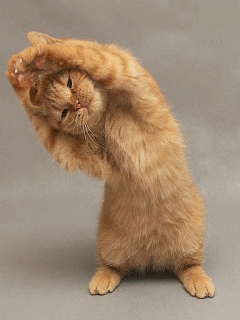

|  |
Kucing Anggora dan Kucing Persia |
|||||||||
| Kucing Anggora | Ankara (Angora) di Turki | Wajah Segitiga, Hidung Mancung | Ideal, Tubuh Tinggi | lebat Menutupi Semua Tubuh | Bulu Tebal Seperti Kemoceng | Aktif, Senang Bermain dan Penurut | Bermain dan Berlari-lari | Mahal Sekitar $700 | Jarang sakit | DTidak Ribet |
| Kucing Persia | Persia (Sekarang Iran) | Wajah Bulat, Hidung Pesek | Gemuk Bulat, Kaki Pendek | Tidak Terlalu Tebal | Tidak Terlalu Tebal | Kalem, Penurut, Pemalas dan Manja | Lebih Suka Diam | Mudah Sekitar $550 | Daya Tahan Tubuh Tidak Bagus | Butuh Perhatian Extra |